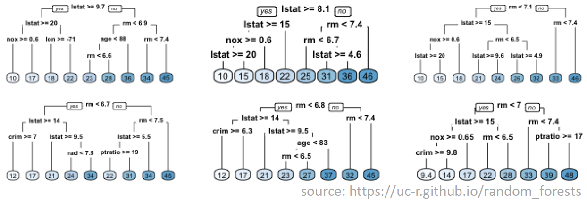
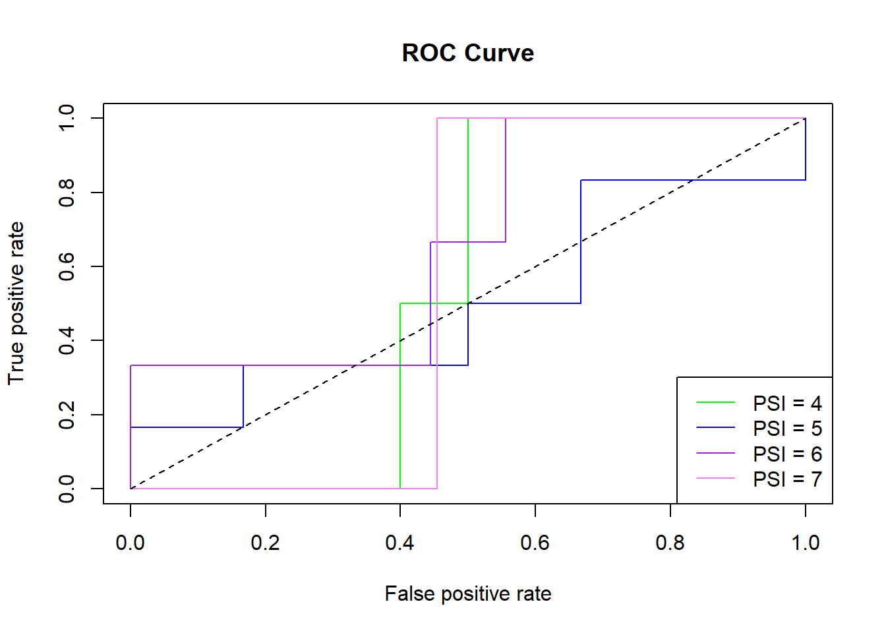

Week 4 Machine learning
This week you will learn about machine learning for classification using R. Objectives are:
To provide an overview of the underlying concepts of machine learning for classification.
To provide an introduction to some popular classification algorithms.
To explore these classification algorithms using various packages in R.
To choose a classification algorithm and apply it to the statewide COVID-19 dataset.
4.1 Day 22 (Monday) Zoom check-in
Here is an overview of what we’ll cover in today’s Zoom session:
Overview of Machine Learning for Classification (30 minutes)
Introduction to the Random Forest algorithm (5 minutes)
A Random Forest Example in R using COVID-19 Data (25 minutes)
4.1.1 A Machine Learning Primer
Machine Learning (ML) may be defined as using computers to make inferences about data.
A mapping of inputs to outputs, Y = f(X , β)
ML for Classification refers to algorithms that map inputs to a discrete set of outputs (i.e. classes or categories)
For example, predicting health risk (mild, moderate, severe) based on patient data (height, weight, age, smoker?)
Or predicting pandemic severity index (PSI) of COVID-19 in a state based on statewide population data.
## PSI Death.Rate Example
## 1 < 0.1% seasonal flu
## 2 0.1% - 0.5% Asian flu
## 3 0.5% - 1.0% n/a
## 4 1.0% - 2.0% n/a
## 5 > 2.0% Spanish flu– Predictions are typically expressed as a vector of probabilities.
– e.g. Pr(cancerous) vs. Pr(benign)
- e.g. Pr(PSI=1), Pr(PSI=2), ..., Pr(PSI=5)A “Black Box” View of Machine Learning
The diagram below illustrates the concept in terms of a “black box” model that converts inputs into predictions.

A “Black Box” Example
The diagram below illustrates a “black box” model that converts height, weight, and age into a prediction of whether or not the individual is male or female.

Some Important Machine Learning Terms
The above example highlights some important machine learning terminology:
Features (X): the inputs (also known as descriptive attributes or explanatory variables) to the algorithm.
Parameters (\(\beta\)): these are internal variables of the selected machine learning algorithm and are also known as coefficients or training weights. Algorithm parameters need to be adjusted to minimize the deviation between predictions and observations.
Labels (Y): these are the outputs of the algorithm (i.e. the categories you are attempting to predict).
Training Data: this is a data sets containing paired observations of inputs (i.e features) and outputs (i.e. labels). Training data is also known as measurement data, observation data or calibration data.
Training: this is the process of adjusting algorithm paramters (\(\beta\)) to obtain the best possible match between training data and corresponding model predictions. Training is also known as model calibration or parameter estimations.
An example set of training data that could be used in the gender prediction example is given below:
## height_m weight_kg age_y gender
## 1.69 62 30 male
## 1.74 76 27 female
## 1.92 82 25 male
## 1.80 100 41 male
## 1.59 47 24 female
## 1.85 75 26 male
## 1.75 63 33 female
## 1.96 83 33 male
## 1.85 39 32 male
## 1.78 58 28 female
## 1.74 70 30 female
## 1.81 57 26 female
## 1.73 78 32 maleUpon completion of training, it is important to evaluate the quality of the model and it’s skill or ability at making correct predictions. Some terms related to this evaluation process are defined below:
Classification Accuracy: this is the ratio of correct predictions to the total predictions when validating a trained classification algorithm.
Confusion Matrix: this is a more detailed summary (relative to classification accuracy) of the performance of a classification algorithm. The diagonals of the matrix count how often the algorithm yielded the correct classification for each class. The off-diagonal entries count how often the algorithm confused one class with another.
The figure below illustrates the classification accuracy and confusion matrix for an example that attempts to classify images of fruits.

- ROC curve: As illustrated in the figure below, the ROC (Receiver Operating Characteristic) curve plots the true positive (TP) vs. false positive (FP) rate at various probability thresholds. In the figure, the dashed blue line represents a hypothetical ROC curve for some machine learning model and the solid red line is the curve for a “non-informative” model (i.e. a model that makes a uniform random guess). As such, we’d like the blue curve to be as far above the red curve as possible.

AUC: this stands for “area under curve” and is the area under the ROC curve. In the previous figure, the AUC would be the area under the dashed blue curve. Values of AUC quantify the degree to which an ROC curve lies above (or below) the red “non-informative” curve. Some interesting AUC values:
AUC = 0.0: the model is always wrong (with respect to TP vs. FP)
AUC = 0.5: the model is no better than guessing (i.e. the model matches the red “non-informative” curve in the figure)
AUC = 1.0: the model is always right (with respect to TP vs. FP)
The Machine Learning Process
Now that we’ve defined some of the important machine learning terminology let’s take a 30,000 foot view at the overall machine learning process. This is a general description of the process that you’ll want to follow each time you build and use a machine learning model. The process is illustrated in the figure below (with credit to Jinesh Maloo):

Step 1: Prepare labeled data for training and validation.
Step 2: Select a machine learning algorithm (i.e. model).
Step 3: Train the model.
Step 4: Evaluate model performance.
If model is useful:
- Step 5: Apply to unlabled data.
Else (needs improvement):
Collect more data (go back to Step 1).
Revise model (go back to Step 2)
4.1.2 The Random Forest Algorithm
The random forest algorithm is a popular choice for machine learning.
Over 20 R packages have an implementation of some form of the algorithm.
We’ll be using the
randomForestpacakge.The algorithm is like
bagging(boostrap aggregating) regression trees, but the rgression trees are de-correlated.
The figure below illustrates one possible tree in a random forest for a gender prediction model. In computer science terminology, each split in the figure is a branch of a graph tree. In simple terms, the split points are randomly generated and the resulting trees combine to form a random forest.

The figure below illustrates a set of 6 trees that make up a random forest for predicting housing prices. The image is courtesy Bradley Boehmke at the University of Cincinnati. Examine the figure closely and notice that:
The split variables can differ across trees (not all variables are included in all trees).
The split variables can differ within trees (not all paths consider the same set of variables).
The order of splits can differ.
The split values can differ.

The job of the random forest algorithm is to determine the optimal set of trees for your data set, including the splitting configuration (i.e. order, values, etc.).
Preparing a COVID-19 Dataset for Machine Learning
We’d like to predict the severity of COVID-19 in a given state using statewide feature data like population, urban density, number of hospital beds, date of stay at home order, etc. We’ve already seen that we can get the information about cases and deaths from the New York Times github page. However, gathering corresponding statewide feature data requires quite a bit of hunting through various public websites. Consequently, we’re going to skip over the painstaking process of marshalling the feature data and just provide you with a dataset that is already nice and prepped for machine learning.
You’ll work with two .csv files - a data file that contains a veriety of statewide data, and a metadata file that describes the various columns of the data file. This combination of data and metadata files is a common way of sharing publicly avaialble datasets.
To give you an idea of what was involved in assembling the data and metadate file, a summary of the data collection and processing steps is given below:
- First, a snapshot of the New York Times COVID-19 data from April 27th was downloaded from the nytimes github repo and stored on local disk.
$ wget https://raw.githubusercontent.com/nytimes/covid-19-data/master/us-counties.csv
$ mv us-counties.csv us-counties_04_27_2020.csvThe data was processed using R :
the cases and deaths in
us-counties_04_27_2020.csvwere aggregated into statewide values.the death rate was calculated and categorized according to an 8-point severity index
finally, the statewide data was exported as a
.csvfile
# get data from file
covid_data_file = file.path("C:\\Matott\\MyQuaRantine", "us-counties_04_27_2020.csv")
# read in as data frame
us_data = read.csv(covid_data_file, stringsAsFactors = FALSE)
# aggregate by county and state
cases_county_state <- aggregate( cases ~ county + state, us_data, max )
deaths_county_state <- aggregate( deaths ~ county + state, us_data, max )
# aggregate by state
cases_state <- aggregate(cases ~ state, cases_county_state, sum)
deaths_state <- aggregate(deaths ~ state, deaths_county_state, sum)
# calculate death rate
death_rate_state <- 100.00 * (deaths_state$deaths / cases_state$cases)
# Assign the following severity index using cut:
## PSI Death.Rate
## 1 < 0.1%
## 2 0.1% - 0.5%
## 3 0.5% - 1.0%
## 4 1.0% - 2.0%
## 5 2.0% - 4.0%
## 6 4.0% - 6.0%
## 7 6.0% - 8.0%
## 8 >8.0%
psi_state <- cut(death_rate_state,
breaks=c(0.0,0.1,0.5,1.0,2.0,4.0,6.0,8.0,100.0),
labels=c(1,2,3,4,5,6,7,8))
# combine into new data frame
out_df = data.frame(
state=cases_state$state,
cases=cases_state$cases,
deaths=deaths_state$deaths,
death_rate=death_rate_state,
severity_index=psi_state)
# write out as csv
my_out_file <- file.path("C:\\Matott\\MyQuaRantine", "covid_data.csv")
write.csv(out_df, file = my_out_file, row.names = FALSE)The resulting statewide COVID-19 label data (i.e. what we would like to predict) was augmented with 32 statewide features, including population, percent urban, number of hospital beds, etc. Feature data was collected from a veriety of sources, including the Center for Disease Control, the American Heart Association, the U.S. Census Bureau, etc. In some cases the feature data was available for direct download (e.g. as a
.csvfile) and in other cases the feature data was manually harvested (e.g. cut-and-paste from websites).The augmented (i.e. features + labels)
.csvfile was split into two.csvfiles that you will need to download:statewide_covid_19_data_04_27_2020.csv: This file contains the final COVID-19 machine learning data set, but features and labels are coded so that feature columns are named
X01,X02,X03, etc. and label colunms are namedY01,Y02,Y03, etc.statewide_covid_19_metadata_04_27_2020.csv: This file maps the column names in the data file to more meaningful names and desciptions (including units) of the associated variables. For example
X01isPct_Sunand has a description ofPercent sunny days. This is known as metadata - data that describes other data.
Click on the links above to download the data and metadata files that you’ll need for the machine learning examples presented throughout the week.
4.1.3 A Random Forest Example Using COVID-19 Data
Let’s apply the random forest algorithm to the COVID-19 dataset. We’ll build out the required R code in sections. To get started, open a new R script in RStudio and name it covid_19_rf.R. Enter the code below:
library(randomForest)
## randomForest 4.6-14
## Type rfNews() to see new features/changes/bug fixes.
library(readr)
data_file = file.path("C:/Matott/MyQuaRantine",
"statewide_covid_19_data_04_27_2020.csv")
df = read_csv(data_file)
## Parsed with column specification:
## cols(
## .default = col_double(),
## State = col_character(),
## X31 = col_character(),
## X32 = col_character()
## )
## See spec(...) for full column specifications.
# coerce severity to a factor (so RF algorithm uses classification)
df$Y04 = as.factor(df$Y04)
df
## # A tibble: 50 x 37
## State X01 X02 X03 X04 X05 X06 X07 X08 X09 X10 X11
## <chr> <dbl> <dbl> <dbl> <dbl> <dbl> <dbl> <dbl> <dbl> <dbl> <dbl> <dbl>
## 1 Alab~ 58 2641 99 71.6 54 4.90e6 827 16.9 42240 3.9 3.5
## 2 Alas~ 41 2061 61 77.1 26.5 7.32e5 87 11.8 59605 6.6 9.44
## 3 Ariz~ 85 3806 193 38.5 32.5 7.28e6 1258 17.5 44414 4.8 8.38
## 4 Arka~ 61 2771 123 70.9 50.7 3.02e6 512 17 43292 3.7 4.51
## 5 Cali~ 68 3055 146 61 44.2 3.95e7 5669 14.3 63711 4.2 3.14
## 6 Colo~ 71 3204 136 54.1 28.8 5.76e6 808 14.2 58500 3.3 4.63
## 7 Conn~ 56 2585 82 69.2 40.7 3.57e6 615 17.2 76481 4.1 2.58
## 8 Dela~ 55 2500 97 70.9 45.8 9.74e5 181 18.7 52599 3.8 3.64
## 9 Flor~ 66 2927 101 74.5 62.7 2.15e7 4358 20.5 50199 3.6 7.55
## 10 Geor~ 66 2986 112 71.1 53.4 1.06e7 1460 13.9 46519 3.9 8.14
## # ... with 40 more rows, and 25 more variables: X12 <dbl>, X13 <dbl>,
## # X14 <dbl>, X15 <dbl>, X16 <dbl>, X17 <dbl>, X18 <dbl>, X19 <dbl>,
## # X20 <dbl>, X21 <dbl>, X22 <dbl>, X23 <dbl>, X24 <dbl>, X25 <dbl>,
## # X26 <dbl>, X27 <dbl>, X28 <dbl>, X29 <dbl>, X30 <dbl>, X31 <chr>,
## # X32 <chr>, Y01 <dbl>, Y02 <dbl>, Y03 <dbl>, Y04 <fct>
metadata_file = file.path("C:/Matott/MyQuaRantine",
"statewide_covid_19_metadata_04_27_2020.csv")
mdf = read_csv(metadata_file)
## Parsed with column specification:
## cols(
## ID = col_double(),
## Code = col_character(),
## Variable = col_character(),
## Description = col_character()
## )
mdf
## # A tibble: 36 x 4
## ID Code Variable Description
## <dbl> <chr> <chr> <chr>
## 1 1 X01 Pct_Sun Percent sunny days
## 2 2 X02 Total_Hours_Sun Total hours of sun
## 3 3 X03 Num_Clear_Days Number of clear days
## 4 4 X04 Avg_RH Average relative himidity
## 5 5 X05 Avg_Dew_Point Average dew point
## 6 6 X06 Total_Population Total population
## 7 7 X07 Senior_Pop_Thousands Population 65+ years in thousands
## 8 8 X08 Senior_Pop_Pct Percentage of population 65+ year
## 9 9 X09 per_capita_income per capita income
## 10 10 X10 Unemployment_Rate Percent unemployment
## # ... with 26 more rowsEnter the code above and try to run it. You may get an errors about missing the randomForest package. You can install it from the RStudio console (see below) or using the installer in the RStudio packages pane.
Now we’ve loaded the data and metadata file. Let’s pick a subset of 5 of the features and use them to try and predict the pandemic severity index (i.e. Y04):
library(dplyr)
##
## Attaching package: 'dplyr'
## The following object is masked from 'package:randomForest':
##
## combine
## The following objects are masked from 'package:stats':
##
## filter, lag
## The following objects are masked from 'package:base':
##
## intersect, setdiff, setequal, union
# describe all possible features and labels
print(mdf, n=nrow(mdf))
## # A tibble: 36 x 4
## ID Code Variable Description
## <dbl> <chr> <chr> <chr>
## 1 1 X01 Pct_Sun Percent sunny days
## 2 2 X02 Total_Hours_Sun Total hours of sun
## 3 3 X03 Num_Clear_Days Number of clear days
## 4 4 X04 Avg_RH Average relative himidity
## 5 5 X05 Avg_Dew_Point Average dew point
## 6 6 X06 Total_Population Total population
## 7 7 X07 Senior_Pop_Thousa~ Population 65+ years in thousands
## 8 8 X08 Senior_Pop_Pct Percentage of population 65+ year
## 9 9 X09 per_capita_income per capita income
## 10 10 X10 Unemployment_Rate Percent unemployment
## 11 11 X11 Uninsured_Rate_Ch~ Percent uninsured children
## 12 12 X12 Uninsured_Rate_Ad~ Percent uninsured adults
## 13 13 X13 Heart_Disease_Rate Deaths per 100000 due to heart disease
## 14 14 X14 Heart_Disease_Dea~ Total deaths due to heart disease
## 15 15 X15 Tobacco_Use_Rate Percentage of tobacco users
## 16 16 X16 Obesity_Prevalenc~ Percentage of population this is considered o~
## 17 17 X17 Num_Hospitals Number of hospitals
## 18 18 X18 Num_Hosp_Staffed_~ Number of hospital beds
## 19 19 X19 Total_Hosp_Discha~ Total number of hospital discharges
## 20 20 X20 Hosp_Patient_Days Total number of patient days in hospital
## 21 21 X21 Hosp_Gross_Patien~ Total hospital gross patient revenue
## 22 22 X22 Number_of_Farms Total number of farms
## 23 23 X23 Urban_Population_~ Percentage of population living in urban areas
## 24 24 X24 Urban_Population Total urban population
## 25 25 X25 Urban_Land_Area_S~ Amount of urban land area in square miles
## 26 26 X26 Urban_Density_Sq_~ Urban density in persons per square mile
## 27 27 X27 Urban_Land_Pct Percentage of land use classified as urban
## 28 28 X28 Pct_Republican Percentage of population registered republican
## 29 29 X29 Pct_Independent Percentage of population not affiliated with ~
## 30 30 X30 Pct_Democrat Percentage of population registered democrat
## 31 31 X31 Stay_at_Home_Star~ Date stay at home order issued
## 32 32 X32 Stay_at_Home_End_~ Date stay at home order scheduled to be lifted
## 33 1 Y01 cases total number of covid-19 cases
## 34 2 Y02 deaths total number of covid-19 deaths
## 35 3 Y03 death_rate death rate as a percentage
## 36 4 Y04 severity_index severity index based on death_rate: ## 1 = < ~
# select some features and the PSI label
my_x = c("X01","X10","X12","X13","X23")
my_y = c("Y04")
my_xy = c(my_x, my_y)
# get descriptions of the selected features and label
filter(mdf, Code %in% my_xy)
## # A tibble: 6 x 4
## ID Code Variable Description
## <dbl> <chr> <chr> <chr>
## 1 1 X01 Pct_Sun Percent sunny days
## 2 10 X10 Unemployment_Ra~ Percent unemployment
## 3 12 X12 Uninsured_Rate_~ Percent uninsured adults
## 4 13 X13 Heart_Disease_R~ Deaths per 100000 due to heart disease
## 5 23 X23 Urban_Populatio~ Percentage of population living in urban areas
## 6 4 Y04 severity_index severity index based on death_rate: ## 1 = < 0.1~
# subset the dataframe
rf_df = select(df, all_of(my_xy))Now we’ll add code to train a basic Random Forest model:
# split into train (75%) and test (25%) datasets
train = rf_df[seq(1,nrow(rf_df), by = 4),]
train = rbind(train, rf_df[seq(2,nrow(rf_df), by = 4),])
train = rbind(train, rf_df[seq(3,nrow(rf_df), by = 4),])
test = rf_df[seq(4,nrow(rf_df), by = 4),]
# create and train the RF model
model = randomForest(Y04 ~ X01 + X10 + X12 + X13 + X23,
data = train)
print(model) # show results, includes confusion matrix
##
## Call:
## randomForest(formula = Y04 ~ X01 + X10 + X12 + X13 + X23, data = train)
## Type of random forest: classification
## Number of trees: 500
## No. of variables tried at each split: 2
##
## OOB estimate of error rate: 65.79%
## Confusion matrix:
## 3 4 5 6 7 8 class.error
## 3 0 0 1 0 0 0 1.0000000
## 4 0 0 1 1 0 0 1.0000000
## 5 0 0 7 8 0 0 0.5333333
## 6 0 1 8 6 0 0 0.6000000
## 7 0 0 1 3 0 0 1.0000000
## 8 0 0 0 1 0 0 1.0000000
importance(model) # measure of parameter importance
## MeanDecreaseGini
## X01 3.918561
## X10 5.399393
## X12 5.904642
## X13 4.577611
## X23 5.143267Taking a look at the results we see and error rate of >50%. The classification accuracy for the training dataset is 100% - error rate - so not a very good model. Further we can see some systematic failures in the confusion matrix. The most likely culprit is that the set of features is inadequate for making the desired prediction. We should re-run the model using different or additional features.
It’s also good practice to examine the ROC and AUC metrics. For a problem with multiple classes (as opposed to a binary True/False or Yes/No problem) we can compute the ROC curve curve and AUC measures using a “one vs all” approach:
First, extract predicted probabilities from the RF model (the scores).
Next, extract actual classification for each category.
Finally, leverage two commands of the
ROCRmodule:prediction(): retrieve scoresperformance(): generates TPR, FPR, and AUC measure through two separate calls
Unfortunately, the calculation is fairly involved and uses a looping structure (i.e. a for loop) to assemble the plot and auc values:
library(ROCR)
## Loading required package: gplots
##
## Attaching package: 'gplots'
## The following object is masked from 'package:stats':
##
## lowess
# compute ROC/AUC using test dataset
x_test = select(test, all_of(my_x))
y_test = select(test, all_of(my_y))
probs = predict(model, x_test, type='prob')
lvls = unique(as.character(y_test[[1]])) # category names
# up to 8 colors needed
cols = c("red","orange","yellow","green",
"blue","indigo","violet","black")
for(i in 1:length(lvls)) # for each category
{
actual = as.numeric(y_test[[1]] == lvls[i])
score = probs[,i]
pred = prediction(score, actual)
perf = performance(pred, "tpr", "fpr")
if(i == 1){
plot(perf, main="ROC Curve", col=cols[i])
}
else {
plot(perf, main="ROC Curve", col=cols[i], add = TRUE)
}
# calculate the AUC and print
auc = performance(pred, measure="auc")
auc = as.numeric(auc@y.values)
cat('AUC for PSI of ',lvls[i], ' = ', auc, '\n')
}
## AUC for PSI of 4 = 0.6
## AUC for PSI of 5 = 0.6388889
## AUC for PSI of 6 = 0.5185185
## AUC for PSI of 7 = 0.7272727
legend("bottomright",legend=paste("PSI =",lvls), col=cols, lty=1,
cex=1.0) # adjust cex to scale the legend
lines(x=c(0,1),y=c(0,1),lty=2) # add threshold for non-informative 
4.2 Day 23
For today’s independent work you will learn about the Support Support Vector Machine (SVM) algorithm and apply it to the radiomics data that you worked with on Monday.
4.3 Day 24
For today’s independent work you will learn about the K-nearest neighbors (KNN) algorithm and apply it to the radiomics data.
4.4 Day 25
For today’s independent work you will learn about artificial neural networks (ANN). You will attempt to add Keras and TensorFlow support to your R/RStudio installation. If this turns out to be too dofficult, you will learn some “remote computing” alternatives that you can use in lieu of a local R/Kera/TensorFlow installation. Finally, you’ll apply R-Keras-TensorFlow to the radiomics example that you’ve been working with during the week.
4.5 Day 26 (Friday) Zoom check-in
4.5.1 Review and trouble shoot (25 minutes)
4.5.2 Next week (25 minutes)
4.6 Day 27
4.7 Day 28
Self-directed activities.